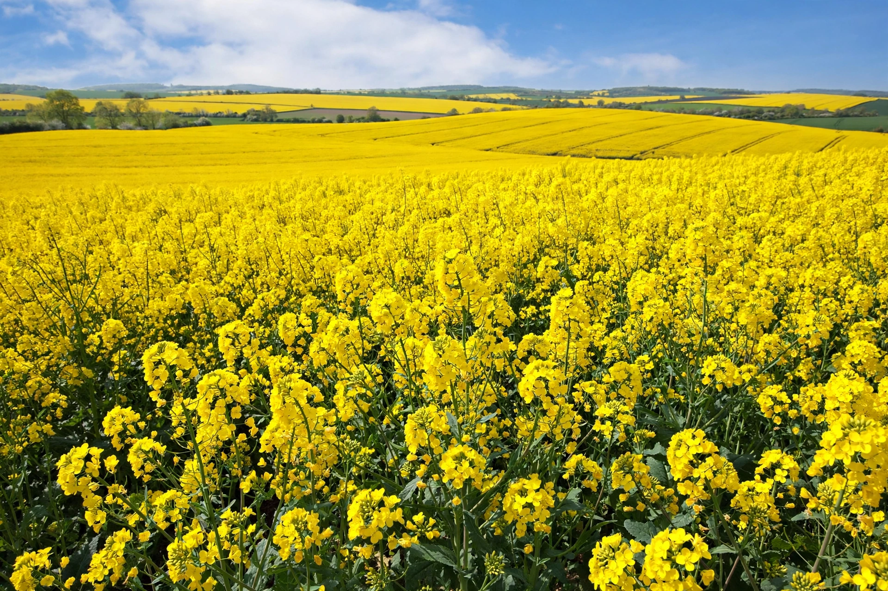

Rapeseed (Brassica napus subsp. napus), also known as oilseed rape, is a bright-yellow flowering member of the Brassicaceae (mustard/cabbage) family, cultivated mainly for its oil-rich seed — the third-largest source of vegetable oil worldwide after soybean and palm.

Grown as a winter or spring annual in temperate regions, rapeseed is sown in Canada, Europe, China, India and Australia. Hybrid B. napus arose from cabbage and turnip rape. Harvested seeds contain ~44% oil.
Canadian breeders in the 1970s bred low-erucic-acid, low-glucosinolate varieties trademarked canola ("Canadian oil, low acid"), now the dominant edible form; meal residue is livestock feed. Rapeseed oil is also a major biodiesel feedstock in Europe.
Most Canadian canola is herbicide-tolerant genetically modified varieties, prompting debate. Glucosinolates and pollen allergenicity are also studied.